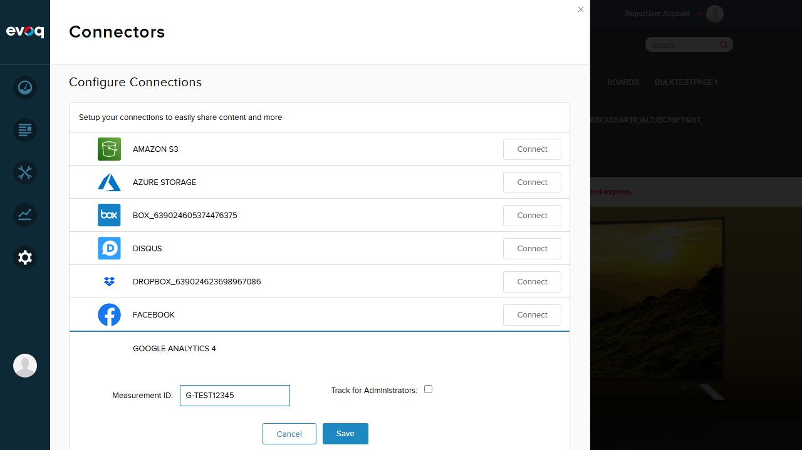
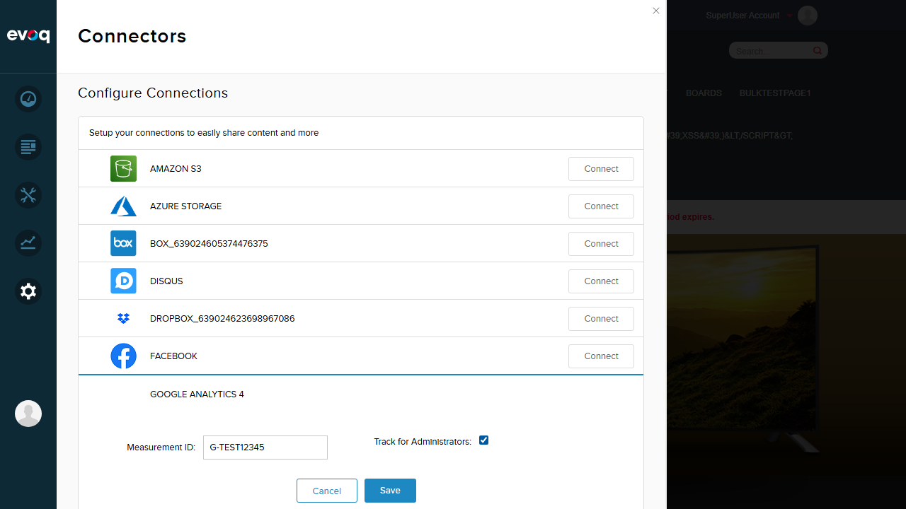
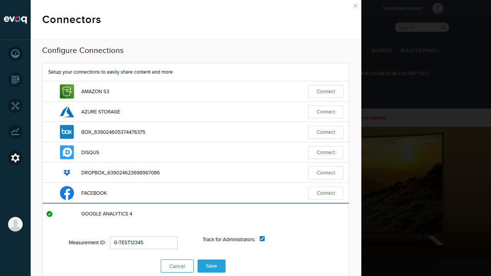
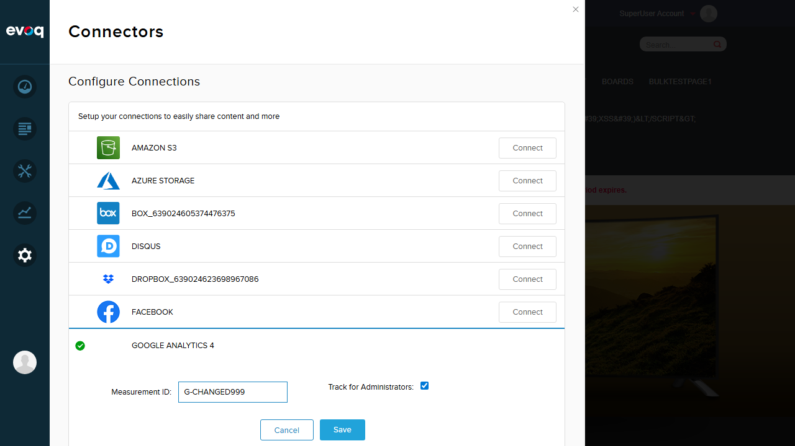
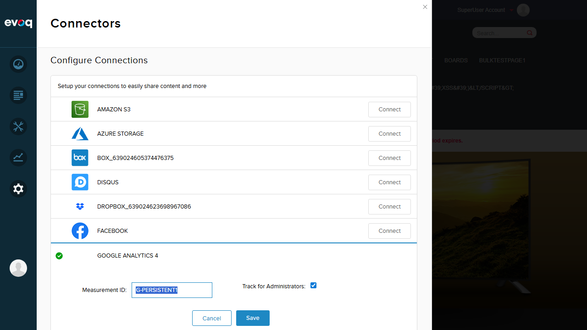

Google Analytics Account Configuration - Test Report
Feature Information
| Feature Name | Google Analytics Account Configuration |
|---|
| Description | Allows selection and configuration of Google Analytics account, web property, and data stream |
|---|
| Extension | Evoq.Content.GoogleAnalyticsConnector |
|---|
| Priority | Top |
|---|
| UI Location | Persona Bar > Settings > Connectors > Google Analytics > Configuration |
|---|
| Test Date | 2026-01-06 |
|---|
Test Results Summary
| Test Scenario |
Status |
| Manual Measurement ID Entry |
PASS |
| Track for Administrators Toggle |
PASS |
| Save Configuration |
PASS |
| Cancel Configuration (Discard Changes) |
PASS |
| Validation for Empty Measurement ID |
PASS |
| Verify Tracking ID Persists After Save |
PASS |
Detailed Test Results
Test 1: Navigate to Google Analytics 4 Connector
Status: PASS
Description: Navigate to Persona Bar > Settings > Connectors and locate Google Analytics 4 connector
- Login as SuperUser (host/Pass123456)
- Click Settings in Persona Bar
- Click Connectors
- Locate Google Analytics 4 in the connectors list
Result: Successfully navigated to Connectors page. Google Analytics 4 connector is visible and accessible.

Test 2: Manual Measurement ID Entry
Status: PASS
Description: Enter a GA4 Measurement ID in the configuration field
- Click "Connect" button for Google Analytics 4
- Configuration panel expands showing Measurement ID field
- Enter "G-TEST12345" in the Measurement ID field
Result: Successfully entered Measurement ID. The text field accepts input and displays the value correctly.

Test 3: Track for Administrators Toggle
Status: PASS
Description: Toggle the "Track for Administrators" checkbox
- Locate the "Track for Administrators" checkbox
- Click the checkbox to enable it
- Verify the checkbox becomes checked
Result: Checkbox toggles correctly. Visual indicator (blue checkmark) shows the enabled state.

Test 4: Save Configuration
Status: PASS
Description: Save the Google Analytics 4 configuration
- Click the "Save" button
- Observe success notification
- Verify connector shows green checkmark indicating active configuration
- Verify "Delete Connection" button appears
Result: Configuration saved successfully. Success toast notification "Item successfully saved." appeared. Green checkmark icon shows connector is now active.

Test 5: Cancel Configuration (Discard Changes)
Status: PASS
Description: Verify Cancel button discards unsaved changes
- Modify the Measurement ID to "G-CHANGED999"
- Click "Cancel" button
- Reopen the configuration panel
- Verify original value "G-TEST12345" is preserved
Result: Cancel button properly discards unsaved changes. Original saved value is preserved after cancel.

After Cancel - Original value preserved:

Test 6: Validation for Empty Measurement ID
Status: PASS
Description: Verify validation prevents saving empty Measurement ID
- Clear the Measurement ID field
- Click "Save" button
- Observe validation error message
Result: Validation works correctly. Error toast notification "Tracking Code Cannot Be Empty" appears when attempting to save empty Measurement ID.
Test 7: Verify Tracking ID Persists After Save
Status: PASS
Description: Verify configuration persists after saving and reopening
- Enter new Measurement ID "G-PERSISTENT1"
- Save the configuration
- Close the configuration panel (Cancel)
- Reopen the configuration panel (Edit)
- Verify "G-PERSISTENT1" is still displayed
- Verify "Track for Administrators" checkbox is still checked
Result: Configuration persists correctly. Both the Measurement ID and checkbox state are retained after closing and reopening the panel.

Observations
- OAuth-based Account Configuration Not Available: The code files (authorize.js, authroize.htm) suggest an OAuth-based configuration flow exists that would allow selecting Google Analytics Account, Web Property, and Data Stream via dropdowns after authorizing with Google. However, this OAuth flow is not visible in the current "Google Analytics 4" connector UI. The UI only shows manual Measurement ID entry. This OAuth feature may be associated with a different connector named "GoogleAnalytics" (not "Google Analytics 4") that is not currently visible in the Connectors list.
- Suggested Test Scenarios Not Fully Testable: The following scenarios from the test specification could not be tested via the UI as the OAuth-based account selection is not available:
- Load and display available Google Analytics accounts
- Select and change Google Analytics account
- Load web properties for selected account
- Select and change web property
- Load data streams for selected property
- Select and configure data stream
- Test configuration with multiple GA accounts
- Basic Configuration Works Well: The manual Measurement ID entry, Track for Administrators checkbox, Save, Cancel, and validation all function correctly.
Test Summary
Total Tests Executed: 7
Passed: 7
Failed: 0
Overall Result: PASS
Notes: All testable UI features for the Google Analytics 4 connector work correctly. The OAuth-based account configuration (Account/Web Property/Data Stream selection) mentioned in the code is not accessible via the current UI and therefore could not be tested. This may be a separate feature or connector not currently enabled.